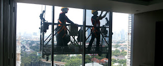

Kaca merupakan kebutuhan yang krusial bagi sebuah industry maupun gedung. Tapi, tak hanya keindahan tetapi juga keamanan bagi penghuni di dalamnya. Tidak halnya hadir beragam material kaca dan juga lantai yang semakin melengkapi nilai estetika sebuah bangunan. Berikut sedikit penjelasan yang bisa anda baca mengenai sebagai rujukan and ajika akan membangun rumah maupun daerah usaha.
Tak hanya kaca, kini juga sudah hadir material penunjang bagi bangunan yang sedang banyak di bangun yakni material parket lantai kayu jati. Segala material tersebut dapat di aplikasikan harga sebuah hunian terlihat lebih menawan nyaman dan juga aman.
Jasa Pemasangan Railing Kaca

Sekarang railing kaca Bau-bau sekarang kian populer. Anda tidak hanya ditawarkan dengan figur atau desain railing kaca Bau-bau yang sama. Lupakan bahan seperti kayu. Anda bisa melakukan eksplorasi dengan memakai bahan berupa kaca saat mau memiliki rumah dengan desain minimalis. Dalam hal kaca, Anda bisa memilih kaca tempered. Tapi kaca pecah, kaca tempered tak akan melukai orang yang terkena kaca tempered tersebut lantaran pecahan begitu kecil dan lembut, tidak berupa kepingan yang runcing.
Ada banyak opsi macam kaca yang dapat dipakai. Tentukan juga desain railing kaca Bau-bau. Sekiranya menyokong keamanan, railing kaca Bau-bau ini juga akan mempercantik desain interior rumah Anda. Dikatakan sungguh-sungguh aman lantaran kaca tempered tak memunculkan pecahan yang runcing saat tiba-tiba kaca pecah entah itu dampak kecelakaan atau petaka seperti gempa. Selain disana terdapat banyak tersedia beraneka ukuran railing kaca Bau-bau dengan desain yang anda inginkan. Apabila memberikan kesan minimalis pada interior rumah, ini juga membuat rumah Anda kelihatan lebih nyaman untuk diciptakan tempat tinggal.
Railing kaca Bau-bau dengan mutu terbaik bisa anda temukan di dis.or.id. Dengan harga yang benar-benar terjangkau, anda dapat seketika menerima railing kaca Bau-bau yanag anda inginkan.
Info Pemesanan Selengkapnya
Google Maps: https://www.google.com/maps/d/viewer?mid=1W14inZYnfBEjAU3RL6mMdLOdyHyt3uKR&ll=-7.27380280025364%2C112.65243155000007&z=18
Note: https://www.facebook.com/notes/distributor-of-industrial-supply/kontraktor-jasa-pemasangan-railing-tangga-kaca/1785722898394256/
Event: https://www.facebook.com/events/1865522363760219/
Distributor, Supplier & Jasa Pasang Kanopi Kaca

Atap kaca skylight ditujukkan untuk mendapatkan cahaya natural UV yang memiliki fungsi sebagai penerangan dalam sebuah ruang. Tak hanya sekedar tembus pandang. Ada beberapa alasan kenapa Pintu Kaca Shower banyak diaplikasikan salah satunya adalah kaca lebih kelihatan bersih dan rapi dan juga lebih gampang dalam perawatannya. Kalau tembus pandang, kaca meresap sinar yang masuk sehingga kian tebal kaca maka semakin sedikit sinar yang dapat melewatinya, maka sifat transparannya makin berkurang.|Di samping pintu kaca shower akan membikin kamar mandi kecil menonjol lebih besar.
Disana anda bisa menerima atap kanopi kaca dengan kwalitas terbaik dan harga terjangkau. Kalau itu, kanopi juga bisa melindungi kendaraan beroda empat dan kendaraan lain anda. Seandainya fungsi utama kanopi sebagai pelindung untuk bangunan tersebut, pemasangan kanopi kaca juga dapat membuat bangunan menjadi terlihat lebih cantik dan menarik, apalagi memakai konsep yang sama dengan konsep rumah minimalis. Tidak anda sedang mencari kanopi kaca, anda bisa segera mengunjungi dis.or.id. Disana anda akan mendapatkan kanopi kaca yang layak dengan berbagai ketebalan dan harga yang cukup terjangkau.
Distributor & Supplier Kaca Shower
Kaca shower kini menjadi suatu hal yang banyak diminati karena banyak orang yang menginginkan sebuah kamar mandi yang memiliki fungsi selain keindahan merupakan kenyamanan. Salah satu cara yang bisa digunakan untuk menghasilkan kamar mandi yang senantiasa bersih adalah menerapkan shower sebab metode pembersihannya memang jauh lebih praktis dibanding dengan yang menerapkan konsep bak mandi. Tidak ingin lebih total lagi, kamar mandi yang mengaplikasikan shower ini bisa dilengkapi dengan komponen lain yakni shower screen atau dapat disebut dengan kaca shower. Jadi sistemnya jauh lebih praktis sebab tak perlu menyiapkan bahan sendiri untuk membuat sekat ruang. Apabila pemasangannya juga betul-betul mudah dilakukan dan tak membutuhkan waktu yang lama. Di samping pintu kaca shower akan membuat kamar mandi kecil kelihatan lebih besar. Apalagi kini sudah ada kios penjual shower screen yang menjual produknya dalam cara satu paket termasuk pemasangannnya.
Tidak hanya itu, kaca shower yang di beli di dis.or.id pemasangan lebih mudah dan fleksibel.
Distributor, Supplier & Jasa Pasang Kanopi Kaca

Kanopi kaca kian banyak diminati sebab sekarang telah banyak bangunan yang memakai bahan kaca untuk lebih mempercantik tampilan rumah. Diantaraya ialah kaca tempered 8 mm, kaca tempered 10 mm clear, kaca tempered 12 mm clear, kaca laminated 12 mm clear, kaca laminated 5 mm + 5 mm clear non tempered kaca, kaca laminated 5 mm + 5 mm tempered clear dan masih banyak lagi. Harga dari tiap kaca yang ditawarkan cukup berbagai tergantung kaca yang nanti akan diaplikasikan. Tidak cuma sekadar tembus pandang. Ada banyak alternatif varian desain. Jika tembus pandang, kaca meresap sinar yang masuk sehingga semakin tebal kaca maka kian sedikit cahaya yang bisa melewatinya, karenanya sifat transparannya makin berkurang.|Di samping pintu kaca shower akan membuat kamar mandi kecil terlihat lebih besar. Atap akrilik atau dapat juga disebut atap kaca acrylic ini banyak ditemukan di sebuah bangunan rumah, seperti ruko, apartemen, restoran, mall, sampai bangunan gedung.
Dis.or.id dapat menolong anda yang mau memasang atap kaca skylight pada gedung, dengan beraneka kelebihan yang dapat anda temukan dengan memanfaatkan jasa yang di tawarkan dis.or.id. Anda juga bisa memenfaatkan jasa pemasangan atap kanopi kaca dengan seluruh macam kaca yang anda butuhkan yang layak dengan kriteria atap kanopi. Banyak bangunan seperti gedung perkantoran, perumahan, ruko dan apartement yang menggunakan kanopi kaca tempered. Sesudah kaca untuk atap kanopi cukup digemari. Disana anda akan mendapat kanopi kaca yang cocok dengan beragam ketebalan dan harga yang cukup relatif murah.
Jasa Maintenance Kaca

Jasa maintenance kaca telah menjadi pilihan ideal jikalau Anda mau melaksanakan perawatan gedung yang terbuat dari kaca. Dengan semakin berjalan nya waktu tentu gedung yang mempunyai bahan kaca pada sisinya memerlukan perawatn khusus supaya konsisten awet dan tahan lama. Jasa maimtenence kaca menyediakan layanan pembersihan kaca gedung serta koreksi kaca gedung yang rusak, pecah dan tidak pantas lagi untuk di gunakan. Biasanya ditahui banyak pemilik gedung kaca yang mau merawat bangunan. Tak kaca tidak kusam, maka kaca harus dibersihkan secara regular. Tenaga yang di gunakan untuk jasa maintenance kaca diantaranya godole, rope access, crane, dan scaffolding.
Lebih dari itu, Bila ahli yang dimilik oleh dis.or.id juga dapat mengkoreksi kaca yang rusak.
Tidak anda tertarik, anda bisa lantas mengunjungi web dis.or.id untuk melihat kabar lebih lanjut mengenai jasa maintenance kaca yang di tawarkan. Untuk itu, alat-alat harus komplit sehingga kami mampu membersihkan segala sudut gedung. Dis.or.id juga telah mempersiapkan dengan pelbagai alat yang bisa diaplikasikan untuk menjangkau segala sudut gedung, sekalipun gedung Anda sangat tinggi. Dengan sudah memberikan training terhadap daya ahli sehingga mereka telah dapat melaksanakan pekerjaan mereka dengan amat baik.
Jasa Pemasangan Kaca Tempered

Tak anda mebutuhkan jasa maintenance kaca, anda dapat mengunjungi dis.or.id. Semakin banyak orang yang berharap mengaplikasikan kaca ini. Kecuali sembarang tukang juga dapat melaksanakan progres pemotongan ini. Untuk gedung perkantoran, komponen yang paling sering kali diwujudkan dengan bahan yang satu ini yaitu jendela dan pintu.
Jika itu, bermacam komponen properti akan semakin menarik jikalau diwujudkan dari kaca tempered seperti kanopi, pintu, kamar mandi, dan balkon.
Dengan mangunjungi dis.or.id, anda bisa mendapatkan dan memanfaatkan jasa kaca tempered yang pantas dengan kemauan anda. Apabila aman kaca tempered juga cakap memberikan kesan estetika yang sungguh-sungguh bagus dibandingkan dengan kata macam lainnya. Harga yang ditawarkan untuk pemasangan kaca tempered betul-betul murah.
Distributor & Supplier Pintu Kaca

Sekarang telah tersedia bermacam-macam jenis dan berjenis-jenis model pintu kaca yang sedang menjadi popularitas dikala ini. Tidak Anda menyukai dengan pintu kaca dengan bingkai, Anda dapat pilih apakah frame tersebut terbuat dari bahan kayu atau alumunium. Energi jenis kaca yang dapat Anda pilih untuk pintu kaca Anda seperti kaca tempered yang sedang booming atau kaca non-tempered yang harganya lebih terjangkau. Desain hal yang demikian dapat disesuaikan dengan konsep properti Anda. Kini tidak kalah penting lagi yaitu pemilihan kaca. Dalam hal ini, terdapat beberapa tipe kaca dengan kwalitas yang terbaik.
Dis.or.id menyediakan pintu kaca dengan bermacam-macam variasi yang bisa anda pilih layak kebutuhan.
Dis.or.id siap untuk membikin pintu kaca sesuai dengan apa yang Anda inginkan. Dis.or.id mempunyai kekuatan yang telah sangat profesional di bidang ini.
Jual Kaca Cermin

Kaca cermin sekarang mempunyai desain yang berbeda. Untuk bangunan bertingakat, terlebih digunakan pada jenis dinding kaca. Ada cermin persegi yang ditempelkan beraturan, cermin berbentuk seperti daun, dan lain sebagainya. Tidak saja, memang kesan minimalis kelihatan dari cermin dengan bentuk persegi atau persegi panjang. Cermin minimalis mempunyai siku.
Akan melainkan, ada juga opsi lain berupa kaca cermin yang berbingkai. Malahan, Anda bisa pakai kaca cermin ini sekalian sebagai material utama, seperti sebagai pintu lemari di kamar tidur Anda. Bahkan, ada juga furniture berupa pintu yang terbuat dari kaca cermin. Jadi, orang di luar tidak bisa mengamati Anda berada di dalam. Tetapi, Anda bisa mengamati orang lain dari dalam rumah. Tapi kunjungi dan peroleh info menarik mengenai kaca cermin hasrat anda. Tak anda berminat untuk mempunyai kaca cermin bagus sebagai pemanis ruangan atau sebagai pintu, anda bisa langsung mengunjungi dis.or.id.
Distributor & Supplier Pintu Lipat Kaca

Sebab keunggulan yang dimiliki hal yang demikian, Anda pasti berdaya upaya harga pintu kaca lipat frameless ini mahal. Apabila ruang makan bersebelahan dengan taman, Anda dapat sekat dengan pintu lipat kaca ini. Tetapi diakui bahwasannya ada variasi kaca yang harganya di bawah kaca tempered. Melainkan, Sekiranya Anda hitung kembali, selisih harganya tidaklah terlalu banyak.
Harga pintu kaca lipat frameless ini benar-benar dipengaruhi oleh ukuran lebar dan tingginya pintu. Dengan demikian, cahaya sang surya di siang hari dapat masuk ke dalam ruangan. Dan dengan adanya pintu kaca ini, keamanan kian baik. Dan yang pasti, ruangan menjadi lebih modern, minimalis, dan nyaman untuk ditempati. Jadi, bukan cuma pintu saja yang berupa kaca, melainkan juga semua sekat ruangan.
Jasa Pemasangan Kubikel Toilet
Ketika ini banyak desain kamar kecil yang didominasi oleh kubikel/cubicle yang memiliki tampilan lebih modern dan mewah. Kubikel kamar mandi yaitu kaca pembatas yang digunakan pada toilet.
Kaca kini banyak dipakai sebagai penyekat ruang. Salah satunya di kamar mandi. Dengan memakai WC kubikel pada hunian maupun gedung yang anda miliki tentunya banyak kelebihan yang anda daptkan yakni harga kubikel yang lebih murah dibandingi dengan bahan konvensionel lainnya. Apabila anda berminat untuk memiliki kubikel kamar mandi, anda dapat seketika mengunjungi dis.or.id.
Tersedia berbagai ukuran serta ketebalan dari kubikel yang dapat anda pilih cocok dengan yang anda inginkan.
Kaca shower yang di jual di jamin kaca shower yang mempunyai kualitas terbaik dan berkwalitas tinggi.
Distributor & Supplier Partisi Kaca
Partisi ini kini lagi dipakai di perkantoran, hotel, atau perbelanjaan saja. Banyak rumah hunian yang sekatnya terbuat dari kaca. Komponen tertentu seperti kamar mandi dalam atau taman dalam ruang yang lazimnya terdapat di bagian tengah atau belakang rumah biasanya memakai pembatas berupa partisi kaca. Tarif ini dilaksanakan menghemat biaya membuat bangunan. sekali partisi ini lebih hemat ketimbang membuat pembatas berupa tembok yang terbuat dari batu bata, pasir, dan juga semen. Alasan yang ketiga, partisi kaca ini menghabiskan space. Anda bisa mencontoh mereka. Kecuali, Anda harus tahu ada desain yang berbeda. Ada partisi kaca frameless atau tanpa bingkai dan partisi dengan pigura. Partisi kaca dengan kualitas terbaik dan berkwalitas anda peroleh di dis.or.id. Disana anda menerima partisi kaca dengan harga yang amat relatif murah. Disana anda akan mendapatkan partisi kaca yang dengan keinginan anda.